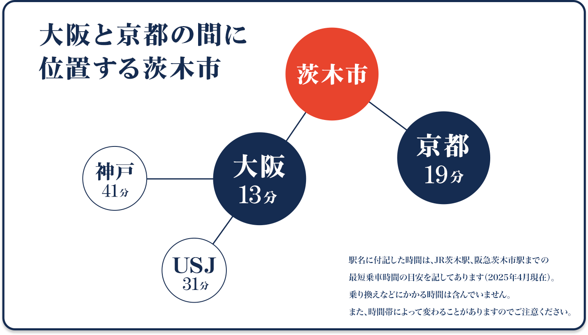

最先端のビジネスや文化が集結する都市・大阪で、充実した
大学4年間を過ごしませんか。進学先に迷っているあなたへ、
大阪・北摂で学ぶ、OIDAIで学ぶという選択肢を。
大阪の中心地・うめきたエリアは、鉄道4社7駅が乗り入れ、
1日約240万人が行き交う西日本最大のターミナルエリアです。
2013年にグランフロント大阪、2025年には
グラングリーン大阪が誕生しました。
2025年に大阪・関西万博が開かれるなど、国際社会を
リードする都市・大阪は、経済・商業・文化・交通の中心地。
最新の技術やサービスが集まってくるこの都市で
学ぶことで、多彩な経験のチャンスを得ることができます。
追手門学院大学のある茨木市を含めた北摂エリアは、
「北摂ブランド」とも呼ばれる
大阪の人気エリアです。
北摂エリアは緑豊かな文教地区で、交通の利便性が高いなど
住みやすい街として人気が高く、
一人暮らしでも安全、安心、快適に過ごせます。
「北摂の市区町村（※赤字）」がさまざまなランキングで上位を席巻！
出典:自治体別住みよさランキング[2024年版]
いい部屋ネット 街の住みここち & 住みたい街 特別集計2024
住み続けたい街 自治体ランキング＜大阪府版＞

茨木市は落ち着いた雰囲気で住みやすく、20分程で大阪・梅田に遊びに行けるのもかなりうれしいポイント。また、キャンパスの目の前にあるイオンタウンにはスタバやサイゼリヤがあり、近くにマクドナルドもあるため、学校帰りに友だちとご飯を食べたり、夕飯の材料を買えるところも魅力的です。
アルバイト先の居酒屋ではまかないが出るので、食費も節約できて助かっています！
茨木市は利便性抜群！就活も遊びも快適！
※最寄り駅までの乗車時間の目安を記してあります。
通学手段が豊富で、電車の本数も多いため、自分の時間を
有意義に使うことができています。また、たくさんの
遊ぶ場所がある点も魅力！
授業の空き時間や休日を
充実させることができています。(広島県出身)

京都にも近い大学で、歴史や文化を学びたい！
歴史や文化について学びたいと思い、京都にも近くて文学部歴史文化専攻がある
追大を選びました。追大は全国各地から学生が集まっているので、
育ってきた環境
が異なる友達と出会い、自分自身の視野を広げることが
できています。
受験生へひとこと!
遠方から通うとなるとたくさんの不安があると思いますが、学びたいことを学べる
環境に身を置くことはすごく楽しくて充実しています。
充実したキャンパスライフを
送るためにも、自分の学びたいことに合った
大学を見つけて下さい！
最初はキャンパスのきれいさに惹かれた
最初はキャンパスのきれいさに惹かれたのですが、母校からは誰も進学したことがなく、最初の追大生になろうと思い決めました。
英検を利用できる英語の得点のみなし制度や、併願無料の制度も
魅力的でした。
OIDAIのここが推し!
今年からできた新校舎はもちろん、少し前からある
アカデミックアークも
三角というユニークな形で
おもしろくてとてもきれいです。
アカデミックベースにはハンモックや、予約制で
パワーポイント作成や
グループワークができる
場所があってとても便利です。
追手門学院大学の入試が
あなたの地元で受験できます!
交通費が抑えられる、受験しやすい、地元だから安心できるなど、地元ならではのメリットがたくさんあります！
交通費が抑えられる、受験しやすい、地元だから安心できるなど、
地元ならではのメリットがたくさんあります！
※会場は変更となる場合があります。詳細は9月発行の2026学生募集要項をご確認ください。